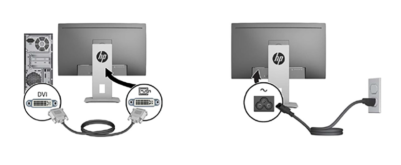
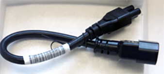
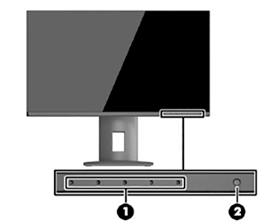

- 00000018WIA30B4A430GYZ
- id_176236885.9
- Aug 23, 2022 9:26:32 PM
LCD Monitor Installation
Prerequisites
| Personnel requirements | |||
|---|---|---|---|
| Required persons | Preliminary requirements | Procedure | Finalization |
| 1 | 0 minutes | 45 minutes | 0 minutes |
| Safety | ||||
|---|---|---|---|---|
| ||||
About this task
Overview
This procedure describes how to install the workspace LCD color monitor used with the MR system.
Procedure
- Connect the video and power cables to the LCD monitor. Route these cables neatly to the back of the monitor base and the operator workspace.
Figure 1. Video and power cable connections - HP monitor 
Note:For HP monitor, use the power cord adapter GE part number 5412946-2 to attach the IEC connection to the monitor.Figure 2. HP monitor mower cord adapter (5412946-2) 
Note: Make sure that only GEHC product video hardware is connected to the GOC so that the software properly installs.Figure 3. Power cable connection - Eizo monitor 
1 Factory preset to On position. Figure 4. Video cable connection - Eizo monitor 
- Turn on the monitor by pressing the power switch on the back of the monitor (see , , or Figure 3, or Figure 6). Check that the main LCD monitor power is on. If not, press the Power On/Off button on the front panel.
Figure 5. Front Power button 
Figure 6. HP monitor front panel controls 
1 Menu and function button 2 Power button - Refer to Figure 7 to verify the following:
-
Make sure the correct video card is selected. If not, choose the correct video card model from the Video Card menu. If the correct video card is not listed, make sure the most recent MrApps software and Service Packs are loaded.
Note:To determine the video card model (if not auto-populated), open a command window and log in as root. Type the command lspci | grep VGA.
Note: It is possible that the customer changed the default password. If you cannot log in, contact the customer for the correct password. -
Make sure the correct display type is selected. If not, choose the correct monitor model from the Display Type menu. If the monitor model is not listed, make sure the most recent MrApps software and Service Packs are loaded.
Note:For the NEC P241W monitor, select LCD Monitor as the display type. After the LCD Monitor is configured in Guided Install, default gamma tables will be installed on the system.
If Guided Install does not provide the LCD Monitor setting, select NEC LCD2490WUXi2 instead.
For the HP and Eizo monitors, select the display type LCD Monitor - Other.
Figure 7. System Configuration panel - example 
-
Finalization
Do a scan to make sure that the system is working properly.
If the system has a camera and the customer wants to match the camera image to the new monitor image, the customer must notify the camera vendor that a new monitor type has been installed and camera adjustments are required.